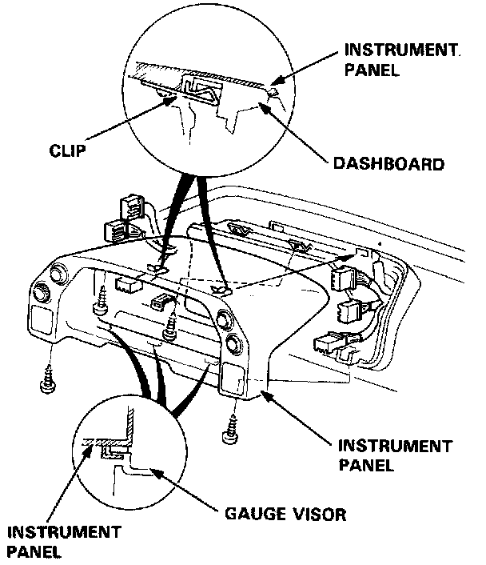
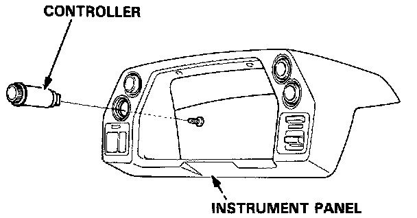
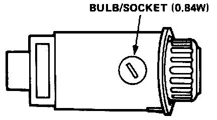

Panel Illumination Control Module: Service and Repair

1. Remove the 4 screws, then remove the instrument panel from the dashboard.
2. Remove the screw from the rear of the instrument panel, then remove the controller,

3. Turn the socket 45 ° counterclockwise to remove it.
